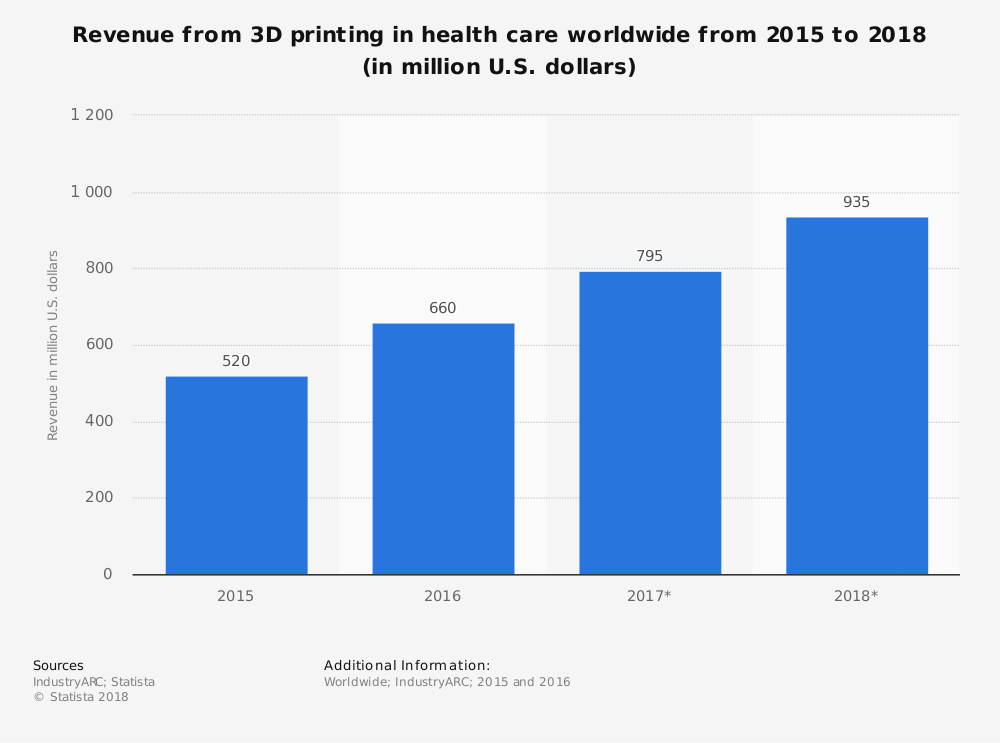

Revenue from 3D Printing
With so many available applications of the 3D technology in the health care environment, the return from it has already been measured. Below (Figure 9) are the surveyed earnings by IndustryARC in January 2018 worldwide. [19]
The graph shows a clear increasing trending, which is measured in millions of US$. It has to be present that only for 2015 and 2016 the revenue was surveyed, meanwhile 2017 and 2018 are projections, expected to reach over 900 million US$.